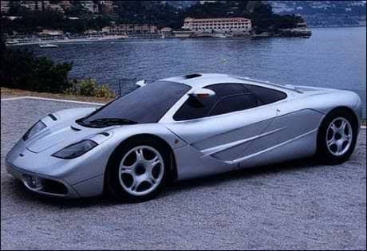
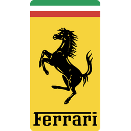
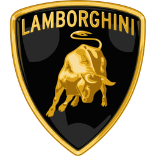
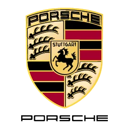

Anos 90 e 2000: Eletrônica Embarcada, Aerodinâmica Extrema e os Primeiros Hipercarros
Período: 1990 – 2009 | O salto tecnológico da mecânica analógica para a era digital e a quebra dos 350 km/h.
1. Grandes Acontecimentos das Décadas
Se as décadas anteriores ensinaram a indústria a extrair eficiência com turbos e formatos angulares, os anos 90 e 2000 foram marcados pelo domínio da **eletrônica embarcada** e pela busca da perfeição dinâmica.
A Revolução da Eletrônica e Assistências de Pilotagem
Controles de tração, freios ABS reprogramáveis, suspensões ativas e câmbios sequenciais com borboletas atrás do volante (herdados diretamente da Fórmula 1) transformaram carros brutos em máquinas de alta precisão acessíveis em altas velocidades.
A Transição do Estilo "Wedge" para a Aerodinâmica Orgânica
Os ângulos retos dos anos 80 deram lugar a curvas esculpidas em túneis de vento. O foco absoluto mudou para a geração de *downforce* (pressão aerodinâmica para baixo) e dispersão de calor sem comprometer a estabilidade acima dos 300 km/h.
A Era dos Hipercarros e Materiais Compósitos
A virada do milênio estabeleceu o conceito de "Hipercarro": modelos de produção limitada utilizando monocoques de fibra de carbono pura, discos de freio de carbono-cerâmica e motores aspirados e sobrealimentados atingindo patamares inéditos de potência.

2. As Grandes Rivalidades da Época
Ferrari vs Lamborghini: A Era dos Câmbios F1 e a Chegada do Grupo VW
Nos anos 90 e 2000, a Ferrari dominou com a introdução das borboletas no volante na **F355** e na **360 Modena**, culminating na lendária **Ferrari Enzo (2002)**. Por outro lado, a Lamborghini, após ser adquirida pelo Grupo Volkswagen, respondeu com o **Murciélago (2001)** e o **Gallardo (2003)**, combinando o urro dos motores V10 e V12 com a segurança da tração integral e acabamento impecável.
Porsche vs Ford: Homenagens ao Passado e o Domínio de Nürburgring
A Porsche chocou o mundo em 2003 ao lançar o Carrera GT, um supercarro analógico equipado com motor V10 derivado da Fórmula 1 e câmbio manual com manopla em madeira balsa. Paralelamente, a Ford renasceu sua herança das pistas com o Ford GT (2005), recriando o visual do lendário GT40 dos anos 60 com um V8 Supercharged moderno, travando batalhas históricas por tempos de volta no circuito de Nürburgring.


3. Tabela Comparativa: Os Ícones das Marcas (Anos 90 e 2000)
Abaixo, uma comparação técnica dos modelos fundamentais que representaram cada uma das quatro marcas na virada do milênio:
| Marca | Modelo Ícone | Ano de Lançamento | Configuração do Motor | Potência / Torque | Velocidade Máxima | Inovação / Destaque Marcante |
|---|---|---|---|---|---|---|
|
 Ferrari |
Enzo Ferrari | 2002 | 6.0L V12 Aspirado | 660 cv / 657 Nm | 350 km/h | Aerodinâmica ativa acionada por computador e freios de carbono-cerâmica. |
|
 Lamborghini |
Murciélago LP640 | 2006 | 6.5L V12 Aspirado | 640 cv / 660 Nm | 340 km/h | Sistema de tração integral permanente com tomadas de ar laterais móveis. |
|
 Porsche |
Carrera GT | 2003 | 5.7L V10 Aspirado | 612 cv / 590 Nm | 330 km/h | Primeiro carro de produção a usar monocoque e subframe inteiramente em fibra de carbono. |
|
|
Ford GT | 2005 | 5.4L V8 Supercharged | 558 cv / 678 Nm | 330 km/h | Estrutura em alumínio hidroformatado com supercharger Eaton acionado por correia. |